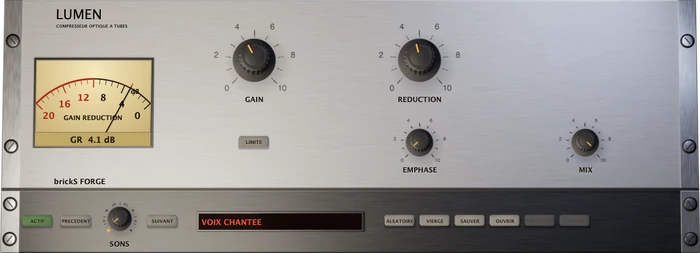
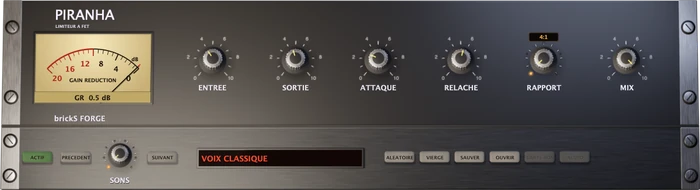

Le catalogue
Les 12 plug-ins : compresseurs
 CROSSFIRECompresseur multibande · 5 bandesCompresseurs
CROSSFIRECompresseur multibande · 5 bandesCompresseurs DYNAMOCompresseur numérique · 8 stylesCompresseurs
DYNAMOCompresseur numérique · 8 stylesCompresseurs GRIPPERCompresseur à VCACompresseurs
GRIPPERCompresseur à VCACompresseurs HEAVYWEIGHTCompresseur à bande et transformateurCompresseurs
HEAVYWEIGHTCompresseur à bande et transformateurCompresseurs IRONCLADCompresseur-limiteur stéréo à transformateursCompresseurs
IRONCLADCompresseur-limiteur stéréo à transformateursCompresseurs
LUMENCompresseur optique à tubesCompresseurs MASTERBUSCompresseur de bus à VCACompresseurs
MASTERBUSCompresseur de bus à VCACompresseurs OMNIFORCEProcesseur de dynamique · de l'expansion à l'inversionCompresseurs
OMNIFORCEProcesseur de dynamique · de l'expansion à l'inversionCompresseurs
PIRANHALimiteur-compresseur à FETCompresseurs RAVAGERCompresseur à neuf rapportsCompresseurs
RAVAGERCompresseur à neuf rapportsCompresseurs THRUSTERCompresseur-limiteur à VCACompresseurs
THRUSTERCompresseur-limiteur à VCACompresseurs TRIODECompresseur à mu variable et tubesCompresseurs
TRIODECompresseur à mu variable et tubesCompresseurs